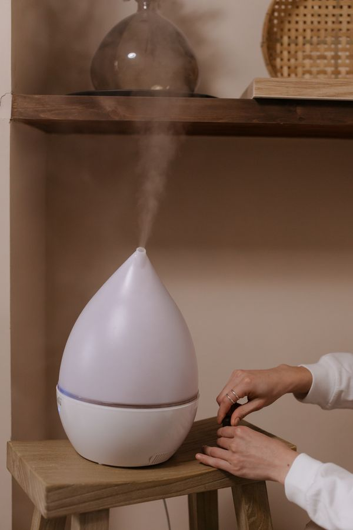

Bedroom Humidifiers: Do They Actually Help You Sleep?

Every winter, heated indoor air turns bedrooms into low-grade deserts — dry throat at 3 AM, a nose that won’t stop running or won’t stop being stuffed, static shocks from the blankets. Humidifiers promise to fix all of it by putting moisture back in the air.
They can genuinely help with comfort. But the leap from “my throat feels better” to “this is a sleep treatment” deserves a closer look.
The Short Version
- Dry air is a real irritant: winter heating drops indoor humidity, drying out your nose, throat, and skin — and that discomfort can fragment sleep.
- The sleep evidence is thin: humidifiers plausibly reduce dryness-related wake-ups, but there’s no strong research showing they improve sleep itself. It’s a comfort fix, not a sleep therapy.
- Cool mist is the safer default: no burn risk, lower energy use. Warm mist feels nice but doesn’t moisturize better.
- Cleaning isn’t optional: a dirty humidifier grows mold and bacteria and blows them around your bedroom — potentially worse than dry air. Clean it on schedule, no exceptions.
- Target 30–50% relative humidity: that’s the comfort zone. Much higher invites dust mites and mold, which are worse for sleep than dryness.
When Dry Air Actually Disrupts Sleep
You know the symptoms: waking up to drink water, a scratchy throat, congested sinuses, dry itchy skin, a partner’s heroic snoring made worse by swollen nasal passages. Dry air doesn’t prevent sleep onset the way noise or light does — it creates micro-discomforts that pull you toward the surface of sleep or wake you fully.
If you sleep fine all summer and only struggle in heating season, dry air is a legitimate suspect. If you sleep badly year-round, a humidifier is unlikely to be the answer — look at mattress comfort, room temperature, and your schedule first.
Cool Mist vs. Warm Mist
Cool mist (ultrasonic or evaporative): the standard recommendation. No heating element means no burn risk (matters with kids and pets), and they use less electricity. Ultrasonic models are nearly silent; evaporative models have a fan hum that some people find pleasant (see our white noise guide — free bonus).
Warm mist: boils water into steam. Feels cozy, and the heat kills most microbes in the tank — but it doesn’t humidify more effectively, it uses more energy, and it’s a burn hazard. There’s little reason to choose it for a bedroom.
A note on “humidity” vs. “hydration”: a humidifier moisturizes the air, which helps your airways and skin indirectly. It doesn’t hydrate you — drink water for that.
What to Look For
Tank size matched to your room. A tiny tank in a big bedroom runs dry by midnight. Check the rated room size and run time, not just the tank volume.
Easy cleaning. This is the feature that matters most and gets the least attention. Wide tank openings, dishwasher-safe parts, no fiddly crevices. If it’s annoying to clean, you won’t clean it — and then you own a mold mister.
Quiet operation. Ultrasonic cool-mist models are the quietest. Check the decibel rating if you’re a light sleeper; anything with a loud fan defeats the purpose.
Humidistat or auto-shutoff. A built-in humidity sensor that stops at your target prevents the #1 user error: over-humidifying. Auto-shutoff when empty is essential — running dry can damage the unit.
No “vitamin” or scent infusions needed. Scented additives and vitamin-C cartridges are marketing. Plain clean water is the entire technology.
The Mold Caveat (Read This Part)
Standing water plus warmth equals biology experiment. Dirty humidifiers can aerosolize mold, bacteria, and mineral dust — irritating airways and potentially triggering allergies or worse. The rules:
- Empty and rinse the tank daily; deep-clean weekly per the manufacturer’s instructions.
- Use distilled water if your tap water is hard — it prevents the fine white mineral dust ultrasonic models can emit.
- Keep humidity at 30–50%. Above ~60%, you’re feeding dust mites and mold on walls and bedding.
- If the bedroom smells musty after running it, something’s wrong — clean it or stop using it.
Cheaper Alternatives Worth Trying First
- Nasal saline rinse or spray before bed — directly moisturizes the passages that are actually bothering you.
- A glass of water on the nightstand — unglamorous, effective for dry-throat wake-ups.
- Lower the heat a degree or two and add a blanket — less heating means less drying (and see our bedroom temperature guide for why cooler is better anyway).
The Honest Take
A humidifier is worth owning if — and only if — dry winter air gives you noticeable symptoms: dry throat, congested nose, itchy skin, static everything. For that person, it’s a genuine comfort upgrade. For everyone else, it’s a gadget that needs weekly cleaning to justify its counter space. Buy it for the symptoms you have, not the sleep you hope for.
Moist air is comfortable air. Just keep the machine cleaner than your coffee maker.